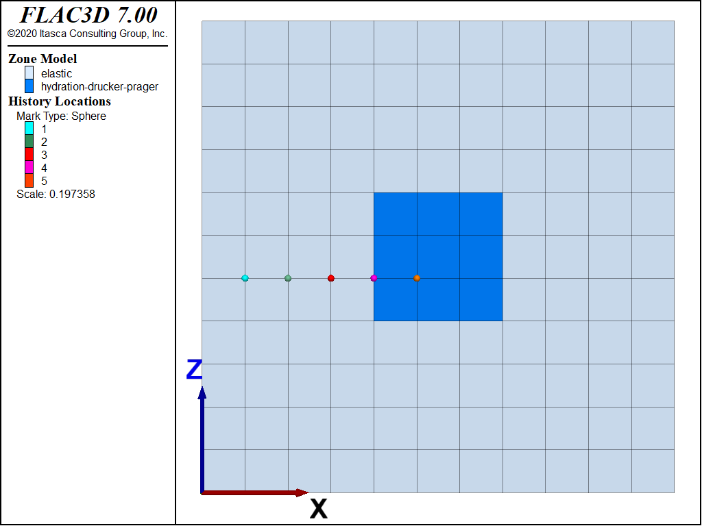
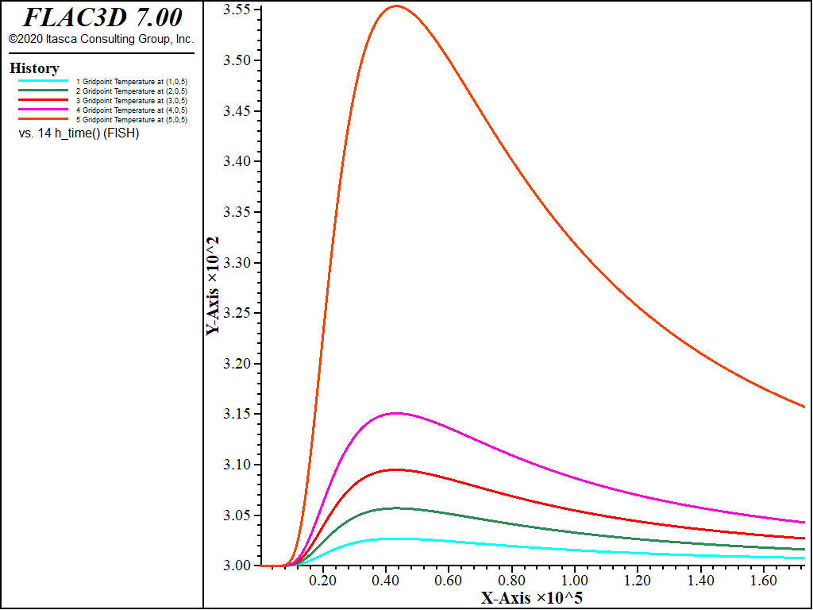
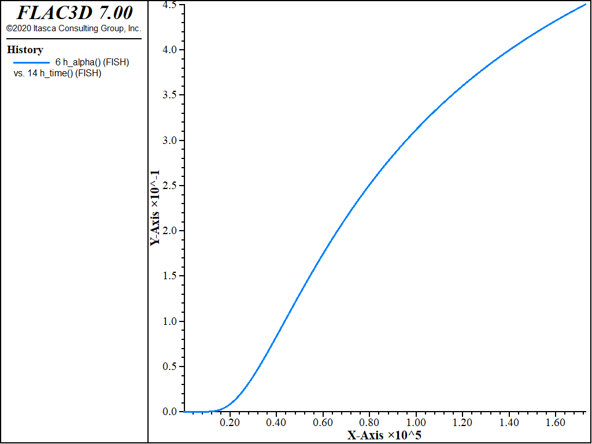
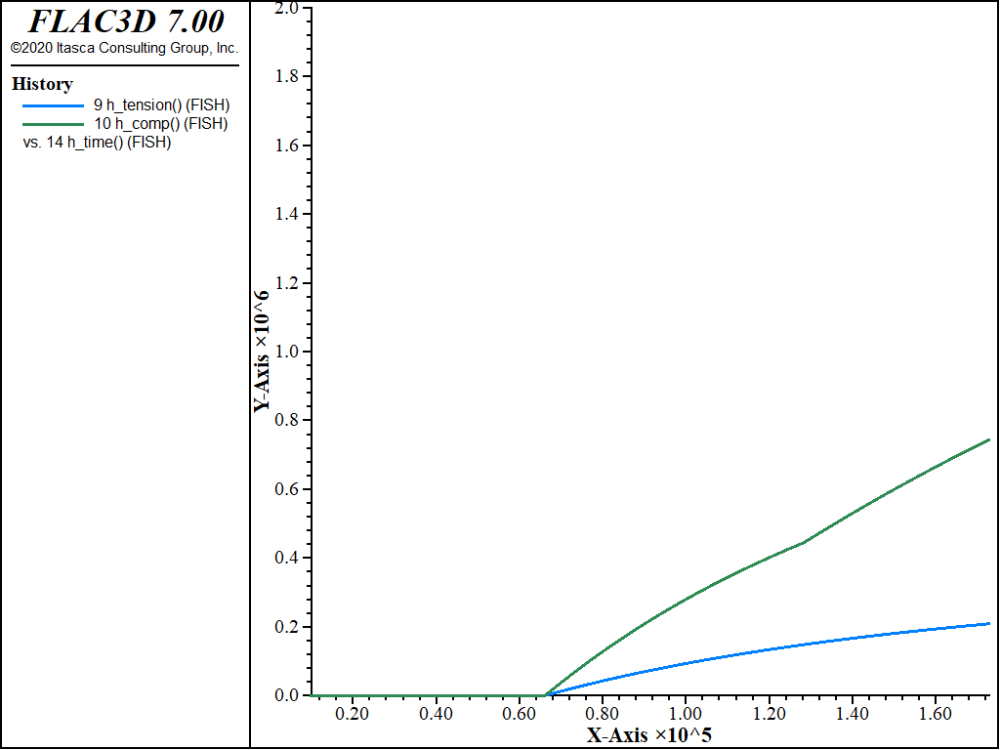
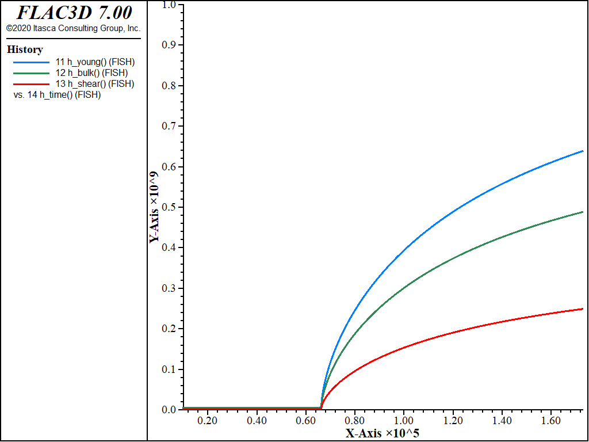
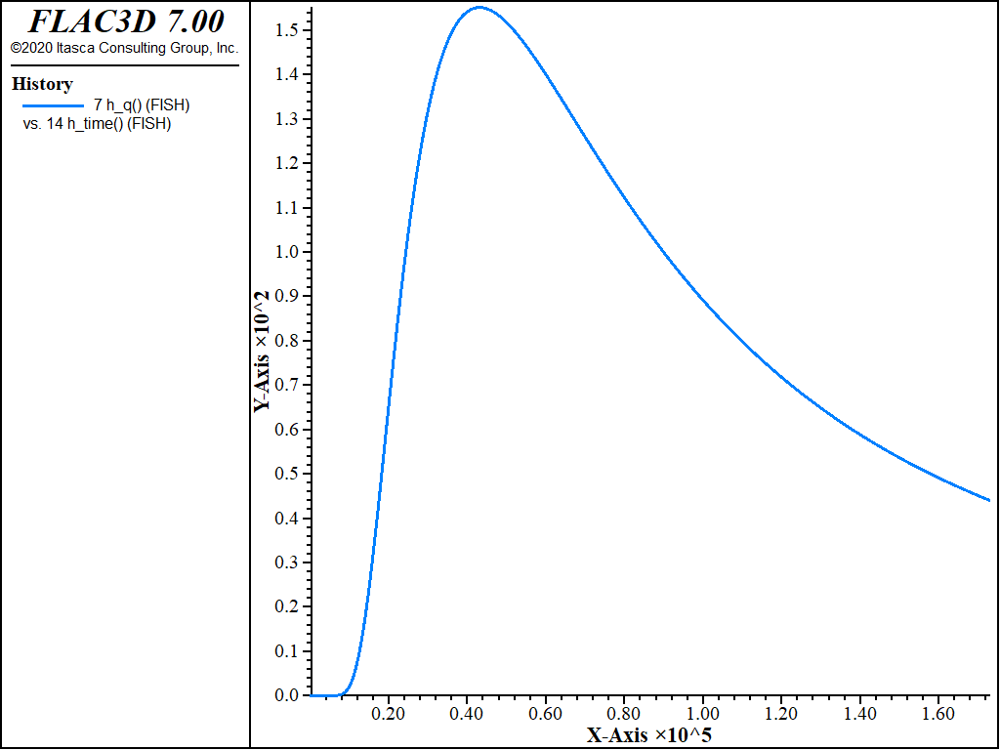

弹性介质中的混凝土夹杂体
注意
要在 FLAC3D 中查看此工程，请使用菜单命令 。选择“Thermal/ConcreteInclusion”，再选择“ConcreteInclusion.f3dprj”即可加载。该工程的主数据文件（main data files）在本示例末尾给出。
本示例为弹性、热各向同性材料中的一个混凝土夹杂体。模型尺寸为 10 m × 1 m × 10 m，并在 \(y\) 方向固定（图 1（Figure 1））。模型边界施加滚动边界条件。材料性质列于表 1（Table 1）（弹性基体）和表 2（Table 2）（混凝土夹杂体）。模型计算了 2 天的热时间。
图 2（Figure 2） 至图 6（Figure 6） 给出了水化过程中各参数的演化：五个点的网格点温度（图 2（Figure 2））；水化度（图 3（Figure 3））；抗拉和抗压强度（图 4（Figure 4））；弹性参数（图 5（Figure 5））；以及生成的水化热（图 6（Figure 6））。


图 1：混凝土夹杂体试验的 FLAC3D 模型。
| 体积模量（\(K\)） | 1000 MPa |
| 剪切模量（\(G\)） | 700 MPa |
| 比热容（\(C_p\)） | 0.2 J/kg/K |
| 热导率（\(k\)） | 20.0 W/m/K |
| 线性热膨胀系数（\(\alpha_t\)） | 10-4 K-1 |
| 最大生成热量（\(Q^{max}_{Ce}\)） | 105 J/kg |
| 水泥浓度（\(C\)） | 330 kg/m3 |
| 材料参数（\(b\)） | -1.114 |
| 材料参数（\(t_1\)） | 7.2 \(\cdot\) 104 [s] |
| 通用气体常数（\(R\)） | 8.314 J/mol |
| 活化能（\(E_{A,1}\)） | 33.5 J/mol |
| 能量变化斜率（\(dE_{A,T}\)） | 1.47 J/mol/K |
| 比热容（\(C_{P,1}\)） | 0.2 J/kg/K |
| 热导率（\(\lambda_1\)） | 2.0 W/m/K |
| 线性热膨胀系数（\(\alpha_t\)） | 10-5 K-1 |
| 水泥的专用参数（\(\alpha_0\)） | 0.20 |
| 完全水化后的杨氏模量（\(E_{cte}\)） | 1000 MPa |
| 材料参数（\(c\)） | 0.4 |
| 材料参数（\(a\)） | 0.6 |
| （\(\alpha - \alpha_0\)）的最小值 | 10-4 |


图 2：混凝土夹杂体试验中网格点温度随混凝土龄期的演化。


图 3：混凝土夹杂体中心网格单元的水化度随混凝土龄期的演化。


图 4：混凝土夹杂体中心网格单元的抗拉和抗压强度随混凝土龄期的演化。


图 5：混凝土夹杂体中心网格单元的弹性参数随混凝土龄期的演化。


图 6：混凝土夹杂体中心网格单元的水化热随混凝土龄期的演化。
数据文件
;--------------------------------------------------------------
; 弹性、热学各向同性介质中的混凝土夹杂体
;--------------------------------------------------------------
model new
model large-strain off
model title "Concrete inclusion in an elastic, thermal isotropic medium"
fish automatic-create off
model configure thermal
;
zone create brick size 11 1 11
zone face skin
zone group 'concrete' range position (4,0,4) (7,1,7)
zone cmodel assign hydration-drucker-prager range group 'concrete'
zone thermal cmodel assign hydration range group 'concrete'
zone cmodel assign elastic range group 'concrete' not
zone thermal cmodel assign isotropic range group 'concrete' not
;
zone property densit=2000 bulk=1e9 shear=0.7e9
zone thermal property conductivity=20.0 expansion=1e-4 specific-heat=0.2
; 水化的力学计算
zone property bulk-reference=0.98e9 shear-reference=0.50e9 ...
range group 'concrete'
zone property constant-c=0.4 constant-a=0.6 range group 'concrete'
zone property hydration-minimum=0.20 tension-reference=2.0e6 ...
range group 'concrete'
zone property hydration-difference-minimum=1e-4 range group 'concrete'
; 水化的热学计算
zone thermal property conductivity=2.0 expansion=1e-5 specific-heat=0.2 ...
range group 'concrete'
zone thermal property density-cement=330 constant-jonasson-b=-1.114 ...
constant-jonasson-t1=7.2e4 range group 'concrete'
zone thermal property constant-gas=8.314 temperature-reference=293 ...
hydration-grade-maximum=1.0 hydration-temperature-maximum=1e4 ...
range group 'concrete'
zone thermal property constant-energy-1=33.5 constant-energy-dt=1.47 ...
constant-energy-halftime=273 constant-heat-1=0.2 ...
range group 'concrete'
zone thermal property hydration-binding-maximum=1e5 ...
constant-conductivity-1=2.0 range group 'concrete'
;
zone gridpoint initialize temperature 300
zone face apply temperature 300 ...
range group 'Top' or 'Bottom' or 'West' or 'East'
;
zone face apply velocity-x 0 range group 'West' or 'East'
zone face apply velocity-y 0 range group 'North' or 'South'
zone face apply velocity-z 0 range group 'Top' or 'Bottom'
;
zone history temperature position (1,0,5)
zone history temperature position (2,0,5)
zone history temperature position (3,0,5)
zone history temperature position (4,0,5)
zone history temperature position (5,0,5)
[global hzp = zone.near.all(6.5,0.5,6.5)]
fish define h_alpha
global h_alpha = zone.therm.prop(hzp,'hydration-grade')
global h_q = zone.therm.prop(hzp,'hydration-rate')
global h_te = zone.therm.prop(hzp,'age-concrete-effective')
global h_tension = zone.prop(hzp,'tension')
global h_comp = zone.prop(hzp,'compression')
global h_young = zone.prop(hzp,'young')
global h_bulk = zone.prop(hzp,'bulk')
global h_shear = zone.prop(hzp,'shear')
global h_time = thermal.time.total
end
fish history h_alpha
fish history h_q
fish history h_te
fish history h_tension
fish history h_comp
fish history h_young
fish history h_bulk
fish history h_shear
fish history h_time
;
zone geometry-update 1
history interval 100
model solve time-total [2*24*3600]
model save 'concreteInclusion'
| 这些内容对您有帮助吗？… 版权与免责声明 |
FLAC3D © 2019, Itasca | 原文更新于 2020 年 10 月 8 日 |